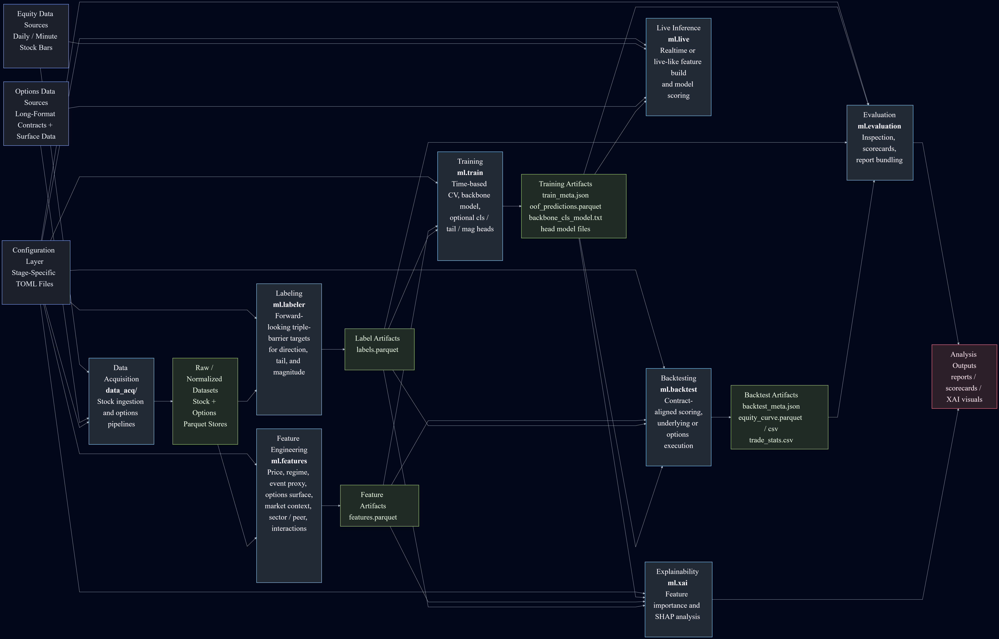

Quantitative Research & Modeling System
A production-oriented Python pipeline for equity and options data acquisition, feature engineering, labeling, model training, backtesting, evaluation, explainability, and live-like inference.
This project demonstrates staged research system design rather than notebook-first modeling work.
I built it around independent stages, explicit artifacts, shared contracts, configuration-driven runs, and reproducible outputs under a structured run directory.
The pipeline ingests stock bars and long-format options data, builds features from underlying price action and options structure, generates targets for direction, magnitude, and tail risk, trains LightGBM models with multi-head outputs, and runs backtesting, evaluation, and explainability stages on the resulting artifacts.
Although the application is quantitative research, the engineering principles are the same ones I apply in hardware: separation of concerns, stage-level validation, reproducible outputs, and systems that can grow without becoming fragile.
Project Summary
- Project Type: ML research infrastructure
- Primary Focus: Data acquisition, staged modeling, backtesting, evaluation, and explainability
- Framework: Modular pipeline with TOML-based configuration and staged artifacts
- Modeling: LightGBM with multi-head outputs and artifact-based training flow
- Data Flow: Equity bars and long-format options data written into downstream stage contracts
- Output: Reproducible runs, auditable backtests, bundled reports, and XAI artifacts
Architecture Focus
The repository is divided into data acquisition plus modular `ml` stages for features, labeling, training, backtesting, evaluation, explainability, and live inference. Each stage runs independently, writes explicit artifacts, and connects to the next stage through a small set of shared contracts.

Why it matters
- Shows system-level engineering outside a notebook-only workflow
- Demonstrates modular architecture, reproducibility, and scalable stage boundaries
- Shows the ability to build technical infrastructure that supports analysis, reporting, and iteration
Engineering themes
This project reflects staged system design, explicit contracts between modules, and validation at each boundary so complex analytical work remains scalable, testable, and reliable.